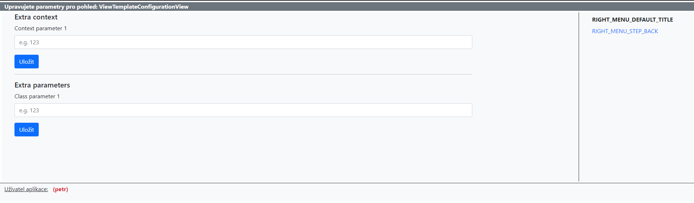

ViewTemplateConfiguration
The idea
The idea behind the DatabaseConfigurableTemplateMixin is to have an option to modify the context, class parameters and then some for a given view directly from the database.
Views that extend the DjangoPuzzleMixinWrapper already extend the DatabaseConfigurableTemplateMixin as so all the developer needs is assign an id to the view like so:
The model
The configuration for each view is stored in the database using the following ViewTemplateConfiguration view.
class ViewTemplateConfiguration(models.Model):
# Display name for easier orientation
view_name = models.CharField(max_length=50)
# View ID - serves as some kind of "ForeignKey" to connect View with its DB configuration
view_id = models.CharField(max_length=30)
# Template name
template_name = models.CharField(max_length=150, null=True, blank=True)
# This dictionary is added as is into View.other_context parameter_name (append operation)
extra_context = models.JSONField(default=dict, null=True, blank=True)
# Attributes used inside of View class instance as its own class->parameter_name.paramXYname
# used in behaviour modification for example
extra_parameters = models.JSONField(default=dict, null=True, blank=True)
As we can see, we can alter the view's context, class parameters and the template.
Front-end
The database record can of course be manually modified from the admin interface. Occasionally though, the users themselves need to be able to modify a view's context for whatever reason. This is where the context configuration view comes in.
The configuration view can be accessed at /common/configure-view/. It expects an app name and a view name separated by a colon (:) - the same the reverse() function is used (i.e. reverse('app:view_name')).
Accessing a configuration view
We have a view defined in urls.py like so:
app_name = 'byty'
path('sestavabytyvlastnici/', SestavaBytyVlastnici.as_view(), name='sestava-byty-vlastnici')
/common/configure-view/byty:sestava-byty-vlastnici'.
Requirements
In order for a view to take advantage of the configuration view it has to conform to the "standard".
- The view must extend the
DatabaseConfigurableTemplateMixin - A
view_idproperty must be specified (so the view can be linked to a database record) - A
user_configurablesproperty must be specified (so the view knows which parameters to make available for users to modify)
User configurables
We might not want to give acccess to all the view parameters but just a subset, that's where the user_configurables property comes in.
class MyView(DatabaseConfigurableTemplateMixin):
view_id = 'my_view'
user_configurables = {
'extra_context': [
{
'name': 'context1',
'label': 'Context parameter 1',
'placeholder': 'e.g. 123'
}
],
'extra_parameters': [
{
'name': 'param1',
'label': 'Class parameter 1',
'placeholder': 'e.g. 123'
}
]
}
This dictionary pretty much describes what the configuration form will look like (as per the following image).

Note that the name values will be used as keys in the database - a context parameter defined here will be available in the global context in a template under the same name.
Tags
An optional feature of the configuration front-end is the tags system. A list of tags can be added into the user_configurables dictionary like so:
user_configurables = {
'tags': ['report'],
"extra_context": [
{
'name': 'contact_email',
'label': 'Kontaktní e-mail',
'placeholder': 'Např. info@asbd.cz',
}
]
}
When navigating to /common/configure-view, links to all configurable views are displayed. If we add a ?tags query parameter into the URL, we can direct which links are displayed.
The usage of tags
We have defined in our user_configurables the following tags - report, ucetni. If we navigate to /common/configure-view/?tags=report, only views tagged with the report tag are displayed. If no tags are defined in the url, all views are displayed.